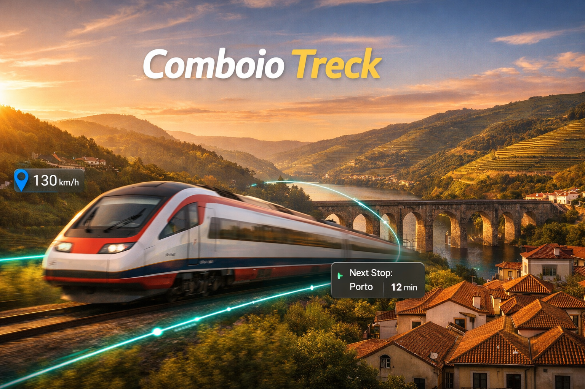

Every Train in Portugal & Spain. Live.
Jeder Zug in Portugal & Spanien. Live.
Todos os Comboios de Portugal e Espanha. Ao Vivo.
Todos los Trenes de Portugal y España. En Vivo.
Track every CP and Renfe train in real time on a live map. See exact GPS positions across the entire Iberian Peninsula, check station timetables, and know exactly when your next train arrives.
Verfolgen Sie jeden CP- und Renfe-Zug in Echtzeit auf einer Live-Karte. Sehen Sie exakte GPS-Positionen auf der gesamten Iberischen Halbinsel, Fahrplane und wissen Sie genau, wann Ihr nachster Zug ankommt.
Acompanhe todos os comboios da CP e da Renfe em tempo real num mapa. Veja posicoes GPS exatas em toda a Peninsula Iberica, consulte horarios e saiba exatamente quando chega o proximo comboio.
Sigue en tiempo real todos los trenes de CP y Renfe en un mapa en vivo. Consulta posiciones GPS exactas en toda la Península Ibérica, horarios de estaciones y sabe exactamente cuándo llega tu próximo tren.
Download on the App Store Im App Store laden Descarregar na App Store Descargar en el App StoreFeatures
Funktionen
Funcionalidades
Funciones
Live Train Map
Live-Zugkarte
Mapa de Comboios ao Vivo
Mapa de Trenes en Vivo
See every active CP and Renfe train on an interactive map with real GPS coordinates. From Alfa Pendular to AVE, Intercidades to Alvia — all color-coded by service type.
Sehen Sie jeden aktiven CP- und Renfe-Zug auf einer interaktiven Karte mit echten GPS-Koordinaten. Von Alfa Pendular bis AVE, Intercidades bis Alvia — farbkodiert nach Zugtyp.
Veja todos os comboios CP e Renfe ativos num mapa interativo com coordenadas GPS reais. Do Alfa Pendular ao AVE, Intercidades ao Alvia — todos diferenciados por cor.
Observa todos los trenes activos de CP y Renfe en un mapa interactivo con coordenadas GPS reales. Desde Alfa Pendular a AVE, Intercidades a Alvia — todos diferenciados por color según el tipo de servicio.
Train Route Details
Zugstrecken-Details
Detalhes da Rota
Detalles de la Ruta
Tap any train to see its complete route with a visual timeline. Know which stations it passed, where it is now, and when it arrives at each upcoming stop.
Tippen Sie auf einen Zug, um seine komplette Route mit Zeitleiste zu sehen. Wissen Sie, welche Stationen er passiert hat, wo er jetzt ist und wann er ankommt.
Toque num comboio para ver a rota completa com cronologia visual. Saiba que estacoes ja passou, onde esta agora e quando chega a cada paragem.
Toca cualquier tren para ver su ruta completa con una cronología visual. Descubre qué estaciones ha pasado, dónde está ahora y cuándo llega a cada próxima parada.
Station Timetables
Bahnhof-Fahrplane
Horarios das Estacoes
Horarios de Estaciones
Search any of 1,200+ stations across Portugal and Spain. See every train passing through today with real-time delays, arrival and departure times, and origin-destination info.
Suchen Sie einen von uber 1.200 Bahnhofen in Portugal und Spanien. Sehen Sie alle Zuge des Tages mit Echtzeit-Verspatungen, Ankunfts- und Abfahrtszeiten.
Pesquise qualquer uma de mais de 1.200 estacoes em Portugal e Espanha. Veja todos os comboios do dia com atrasos em tempo real, horarios de chegada e partida.
Busca entre más de 1.200 estaciones en Portugal y España. Consulta todos los trenes del día con retrasos en tiempo real, horarios de llegada y salida, y datos de origen-destino.
In-Train Mode
Im-Zug-Modus
Modo a Bordo
Modo a Bordo
Board a train and the app automatically detects which one you're on. See your next stop, estimated arrival, and the full journey ahead — hands-free.
Steigen Sie ein und die App erkennt automatisch Ihren Zug. Sehen Sie die nachste Haltestelle, geschatzte Ankunft und die gesamte Reise — freisprechend.
Embarque num comboio e a app deteta automaticamente qual e. Veja a proxima paragem, hora de chegada e toda a viagem — sem tocar no telemovel.
Sube a un tren y la app detecta automáticamente en cuál vas. Consulta tu próxima parada, la hora estimada de llegada y todo el recorrido — sin usar las manos.
Live Delay Tracking
Echtzeit-Verspatungen
Atrasos em Tempo Real
Retrasos en Tiempo Real
Know exactly how late your train is — per stop. Delay data is shown in minutes for every station along the route, updated every 30 seconds.
Wissen Sie genau, wie spat Ihr Zug ist — pro Halt. Verspatungsdaten werden in Minuten fur jede Station angezeigt, alle 30 Sekunden aktualisiert.
Saiba exatamente o atraso do seu comboio — por paragem. Os atrasos sao mostrados em minutos para cada estacao, atualizados a cada 30 segundos.
Conoce con precisión cuánto se retrasa tu tren — en cada parada. Los retrasos se muestran en minutos para cada estación de la ruta, actualizados cada 30 segundos.
Railway Network
Schienennetz
Rede Ferroviaria
Red Ferroviaria
The entire Iberian rail network drawn on the map from OpenStreetMap data. Zoom in to see tracks, stations, and trains running across Portugal and Spain.
Das gesamte iberische Schienennetz auf der Karte mit OpenStreetMap-Daten. Zoomen Sie hinein, um Gleise, Stationen und fahrende Zuge in Portugal und Spanien zu sehen.
Toda a rede ferroviaria iberica desenhada no mapa com dados do OpenStreetMap. Aproxime para ver as linhas, estacoes e os comboios em circulacao em Portugal e Espanha.
Toda la red ferroviaria ibérica dibujada en el mapa con datos de OpenStreetMap. Amplía para ver las vías, estaciones y trenes en circulación por Portugal y España.